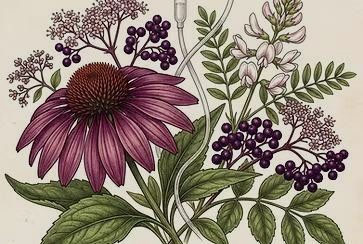

IV Infusion Therapy - "Feel Good Fridays"

The Myers Cocktail
The "Base of the Pyramid" for energy, nervous system balance, and core nutrient replenishment.
Read more ...
Why choose a Myers Cocktail?
- Energy and Vitality: B-Vitamins support natural energy production.
- Nervous System Balance: Magnesium and B-Complex soothe nerve pathways.
- Cellular Function: Vitamin C manages vital internal cellular processes.
- Physical Recovery: Supports muscle activity through Magnesium replenishment.
Moment to moment, your body relies on a precise foundation of micronutrients. These vitamins and minerals are at the base of your "pyramid of health." While oral supplements are a common starting point, the digestive process often limits how much your body can actually use. By delivering these nutrients directly into the bloodstream, your body can access them more efficiently than with the oral method alone. Together, this infusion works to replenish your depleted levels and restore balance. You would be amazed at how replacing these needed basic nutrients can make you feel—it provides the steady internal environment your body needs for true settling and renewal.

Refresh & Restore
A rapid rehydration protocol to calm the body and recover from travel or high-stress weeks.
Read more ...
Why choose Refresh & Restore?
- Deep Rehydration: Instantly restores fluid balance.
- Stress Support: Formulated to help calm the body after stressful choices.
- Systemic Replacement: Restores what "always-on" living depletes.
Moment to moment, we all need support along the way. Whether you are dealing with the aftermath of a busy work week, travel, or a period of celebration, your body can become depleted. This infusion works to rehydrate and replenish your system, providing the fluid foundation necessary for your organs to function without the "drag" of dehydration. A way of beginning to accomplish this is to allow your nervous system a dedicated hour to settle. By choosing this blend, you are sending a message to your body that it is safe to rest, recover, and return to a state of calm.

Immunity Boost
A fortified blend of Zinc, Vitamin C, and Selenium to strengthen your internal armor and resilience.
Read more ...
Why choose the Immunity Boost?
- Immune Resilience: A blend of Vitamin C, B-Complex, and Zinc Sulfate.
- Antioxidant Power: Selenium and Glutathione provide cellular protection.
- Defense Support: Fortifies your system against environmental stressors.
Moment to moment, your immune system is your primary line of defense. This infusion blend supports that resilience by providing the specific building blocks—like Zinc and Vitamin C—that white blood cells need to stay active. By holding these potent antioxidants in your system, you provide a layer of cellular protection that helps you stay steady through the changing seasons.
Glutathione
The Master Antioxidant for liver detoxification, inflammation support, and cellular protection.
Read more ...
Why choose a Glutathione infusion?
- Toxin Clearing: Assists with the breakdown of free radicals via the liver.
- Inflammation Support: Supports the body's natural response to systemic inflammation.
- Immune Function: Plays a vital role in keeping your defenses vigilant.
Moment to moment, your body is producing Glutathione naturally—it is one of our most important internal defenders. However, as we age, our natural production of this master antioxidant decreases. By using the IV route, we bypass the oral pathways of intake, making this vital molecule highly bioavailable to each of your cells and vital organs. A way of beginning to accomplish this is through a focused push that assists your liver in clearing toxins. This allows your body to function with less oxidative "noise," protecting your cells and supporting your long-term health.

Bright & Beautiful
A radiance-focused infusion that targets skin firmness and a brighter, even-looking complexion.
Read more ...
Why choose Bright & Beautiful?
- Skin Firmness: Vitamin C plays an essential role in collagen production.
- Elasticity Support: Helps maintain the structural integrity of your skin.
- Luminous Glow: Glutathione contributes to a brighter, more even complexion.
- Combat Oxidative Stress: Protects against the environmental factors that age the skin.
Moment to moment, your skin is a reflection of your internal health. The Bright & Beauty IV Infusion features a synergistic blend of Vitamin C and Glutathione designed to support skin health and overall radiance from within. This is "beauty from the inside out"—targeting cellular renewal and skin health at the source rather than just the surface. A way of beginning to accomplish this is through this nutrient-rich session. Together, these nutrients combat oxidative stress, supporting healthy skin and a naturally luminous glow that radiates through your daily life.
FIRST FRIDAY OF EVERY MONTH!
*Limited spots available